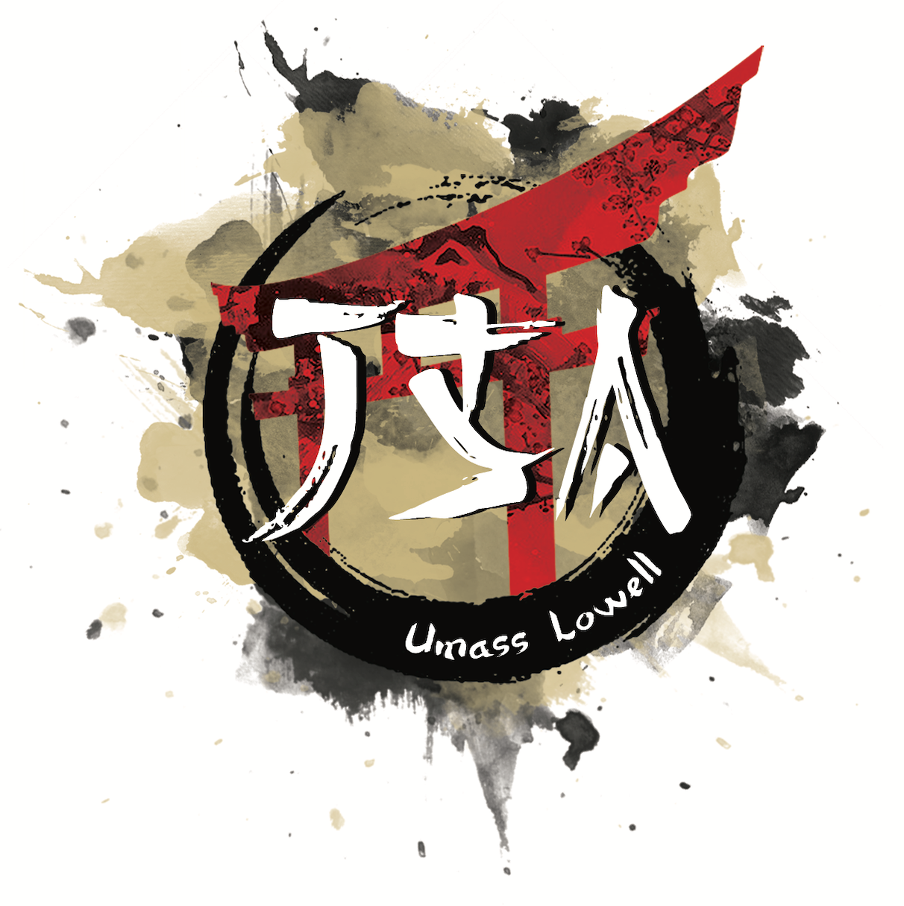

As chapter president of UMass Lowell's Association for Computing Machinery chapter, I worked with a team of six members to create meetings for CS students. Our meetings ranged from workshops on tools such as Python to guest speakers from CS upperclassmen at the university.
One of my favorite meetings as chapter president was our Resume Workshop held in Spring 2025. My board members and I reviewed students' resumes the week before the Career Fair. We also gave students tips and tricks on how they can make their resume standout.

As an intern at Fidelity Investments, I developed features for Fidelity's flagship mobile app on Android Devices. I worked with the Good Will Planning squad and the Apex Squad to implement features related to financial planning and retirement goals.
I implemented my features using Kotlin and Jetpack Compose, a framework for Android that allows developers to build UI using Kotlin instead of XML. Some of the features I implemented include notification cards reminding users to set their goals and a drop-down menu to help users view their goals. The drop-down menu involved implementing a custom component made by Fidelity's Apex Team.
I communicated my progress with my team, the Good Will Planning squad, and participated in standup sessions and sprint planning meetings. I also communicated progress with my manager.
Outside of work with my squad, I attended events and sessions for Fidelity interns such as financial literacy sessions, career planning, diversity and inclusion, and National Intern Day. Although I did not get a return offer, I am proud of the experience I made at Fidelity Investments.

Info about time as Senior Club Advisor to be written here later.
Info about time as Social Media Manager to be written here later.
Gallery of my experiences